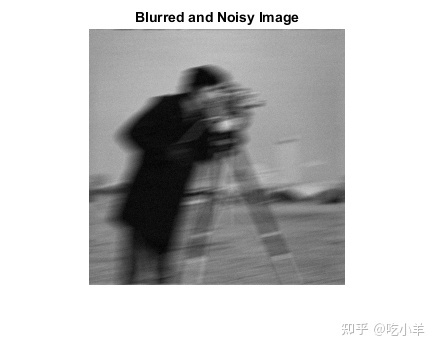
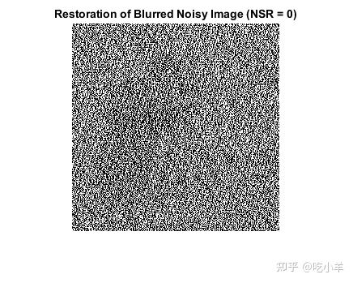
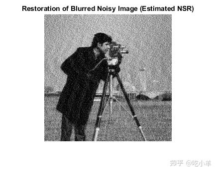
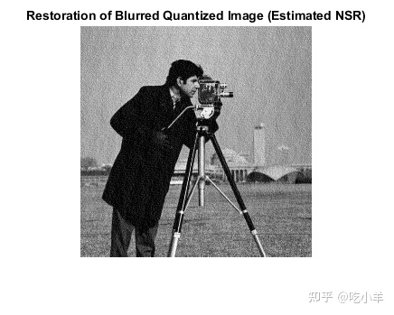

Home
此示例说明如何使用 Wiener 反卷积对图像进行去模糊。当图像的频率特征和加性噪声已知时，至少在一定程度上可以有效地使用 Wiener 反卷积。
读取原始图像
读取并显示没有模糊或噪声的原始图像。
Ioriginal = imread('cameraman.tif');
imshow(Ioriginal)
title('Original Image')
模拟和还原无噪声运动模糊
模拟照相机移动可能导致的模糊图像。首先，创建点扩散函数 PSF，方法是使用 fspecial 函数并指定以 11 度角跨 21 个像素的线性运动。然后，使用 imfilter ，将点扩散函数与图像进行卷积。
原始图像的数据类型为 uint8。如果您将 uint8 图像传递给 imfilter，则该函数将量化输出以返回另一个 uint8 图像。要减少量化误差，请在调用 imfilter 之前将图像转换为 double。
PSF = fspecial('motion',21,11);
Idouble = im2double(Ioriginal);
blurred = imfilter(Idouble,PSF,'conv','circular');
imshow(blurred)
title('Blurred Image')
使用 deconvwnr 函数还原模糊图像。模糊图像没有噪声，因此您可以忽略噪信比 (NSR) 输入参数。
wnr1 = deconvwnr(blurred,PSF);
imshow(wnr1)
title('Restored Blurred Image')
模拟和还原运动模糊和高斯噪声
使用 imnoise 函数将零均值高斯噪声添加到模糊图像中。
noise_mean = 0;
noise_var = 0.0001;
blurred_noisy = imnoise(blurred,'gaussian',noise_mean,noise_var);
imshow(blurred_noisy)
title('Blurred and Noisy Image')

尝试使用 deconvwnr 还原模糊的含噪图像，但不提供噪声估计值。默认情况下，Wiener 还原滤波器假设 NSR 等于 0。在这种情况下，Wiener 还原滤波器等效于理想的逆滤波器，它对输入图像中的噪声非常敏感。
在此示例中，该还原过程将噪声放大到了使图像内容丢失的程度。
wnr2 = deconvwnr(blurred_noisy,PSF);
imshow(wnr2)
title('Restoration of Blurred Noisy Image (NSR = 0)')

尝试使用 deconvwnr 和更实际的估计噪声值来还原模糊的含噪图像。
signal_var = var(Idouble(:));
NSR = noise_var / signal_var;
wnr3 = deconvwnr(blurred_noisy,PSF,NSR);
imshow(wnr3)
title('Restoration of Blurred Noisy Image (Estimated NSR)')

模拟和还原运动模糊和 8 位量化噪声
即使视觉上察觉不到的噪声也会影响结果。噪声的一个来源是在处理以 uint8 表示的图像中产生的量化误差。以前，为了避免量化误差，会基于数据类型为 double 的原始图像模拟模糊图像。现在，为了探究量化误差对还原的影响，基于原 uint8 数据类型的原始图像模拟模糊图像。
blurred_quantized = imfilter(Ioriginal,PSF,'conv','circular');
imshow(blurred_quantized)
title('Blurred Quantized Image')
尝试使用 deconvwnr 还原模糊量化图像，但不提供噪声估计值。尽管没有添加额外的噪声，但与数据类型为 double 的模糊图像的还原相比，此还原降低了质量。
wnr4 = deconvwnr(blurred_quantized,PSF);
imshow(wnr4)
title('Restoration of Blurred Quantized Image (NSR = 0)');
尝试使用 deconvwnr 和更实际的估计噪声值来还原模糊量化图像。
uniform_quantization_var = (1/256)^2 / 12;
signal_var = var(Idouble(:));
NSR = uniform_quantization_var / signal_var;
wnr5 = deconvwnr(blurred_quantized,PSF,NSR);
imshow(wnr5)
title('Restoration of Blurred Quantized Image (Estimated NSR)');

======================================================================
我的测试结果及程序
下面是我测试的代码：

注：本文根据MATLAB官网内容修改而成。